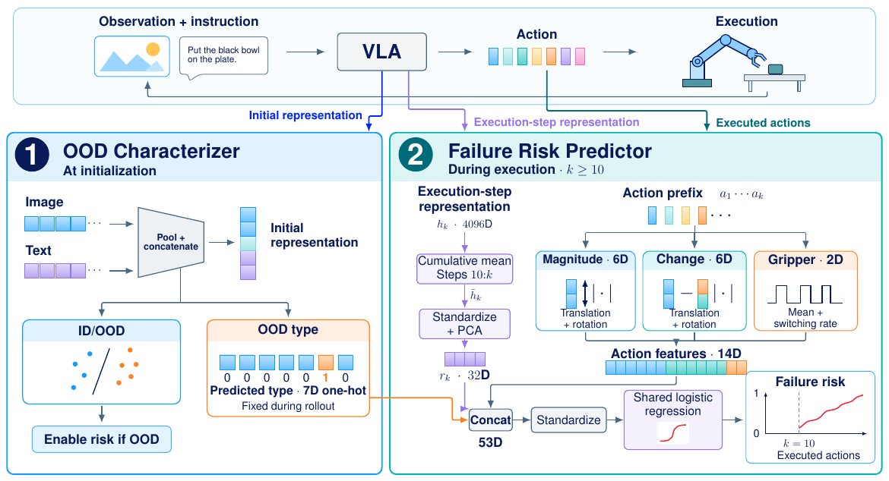

OOD Characterizer
Pooled image and language representations support ID/OOD detection and OOD type classification.
At initializationVISION · LANGUAGE · ACTION
1 Texas Tech University2 Purdue University
An unfamiliar input does not always mean failure.
Understand the shift. Watch the execution. Predict the risk.
A two-stage walkthrough, followed by selected success and failure examples across seven OOD categories.
OpenVLA · 10 LIBERO-Spatial tasks · Leave-One-Group-Out evaluation. Failure ROC-AUC is measured on all 1,400 OOD rollouts, independently of the OOD gate.
THE IDEA
Vision-language-action models may still succeed under distribution shifts, so detecting OOD inputs alone is insufficient to predict execution failure. VLA-Scope connects initial input-shift characterization with evidence from partial executions.
The OOD Characterizer detects unfamiliar inputs and identifies their shift categories. For inputs flagged as OOD, a shared Failure Risk Predictor combines the predicted category, action-prefix features, and temporally aggregated execution-step representations to update failure risk as execution proceeds—without changing the underlying policy.
WHY SHIFT CONTEXT MATTERS
Every category contains both successful and failed rollouts. Shift type provides context, but it does not determine an individual outcome.
Observed failure rates in the evaluated data.
200 rollouts per category; not universal failure probabilities.
HOW IT WORKS
Characterize the initial input, then monitor evidence from the execution.
Pooled image and language representations support ID/OOD detection and OOD type classification.
At initializationPredicted OOD type + action-prefix features + cumulative execution-step representation feed a shared logistic regression model.
During execution · from action 10
An ID decision returns no failure-risk score; it is not a prediction of task success. The predicted shift category is fixed within each rollout.
KEY RESULTS
At 10, 30, and 60 actions, evaluation retains the same 1,400 OOD rollouts.
ROC-AUC improves as evidence accumulates. Later checkpoints have changing cohorts as completed rollouts leave evaluation.
Without cumulative representation0.7906
Without action features0.8344
VLA-Scope0.8497
Step-60 ROC-AUC. Both reduced variants retain predicted OOD type.
| Method | ROC-AUC ↑ | CPU scoring latency ↓ |
|---|---|---|
| ActProbe | 0.8132 | 1.068 ms |
| SAFE-MLP | 0.8055 | 3.249 ms |
| SAFE-LSTM | 0.7414 | 6.773 ms |
| VLA-Scope | 0.8497 | 0.893 ms |
Source: Table IV. Neural baseline ROC-AUC is averaged over three seeds. Latencies use cached inputs and exclude policy feature acquisition, simulation, file access, and model loading; they are not end-to-end inference times.
WATCH THE EXECUTION
Successful and failed executions, side by side with their evolving failure-risk scores.
Selected illustrative cases, not an unbiased sample of model performance. Success/Failure labels denote final outcomes; frame borders denote the current prediction: green below 50%, red at or above 50%, gray before scoring. Playback: 20 actions/s.
Download the rollout video ↓READ MORE
Experimental protocol, ablations, error analysis, and implementation details.
Read the full paper ↗